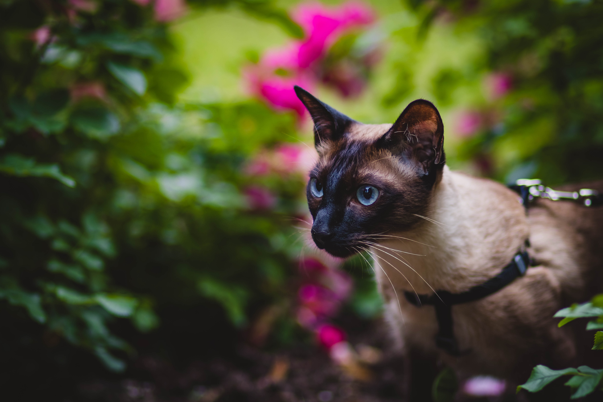
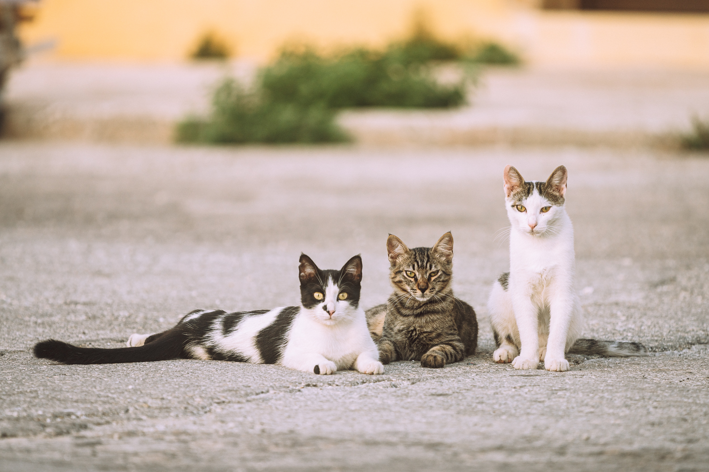
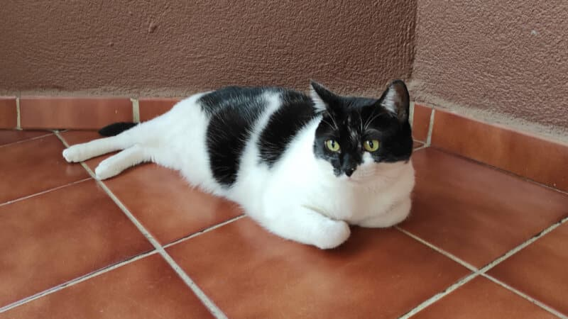
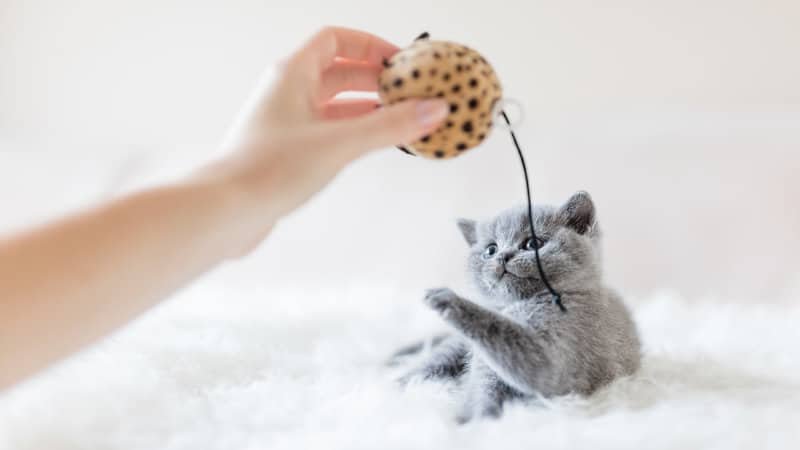
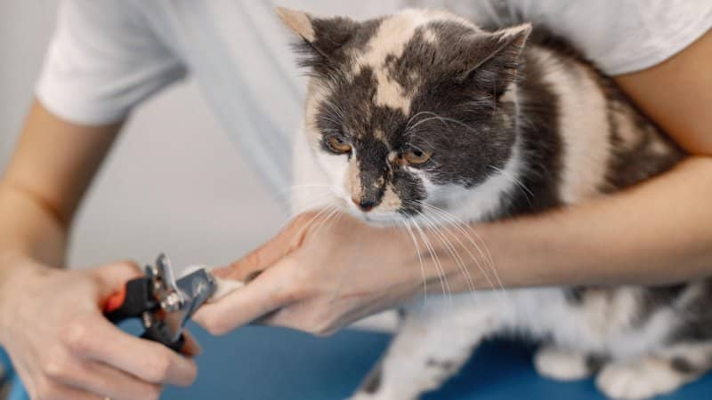
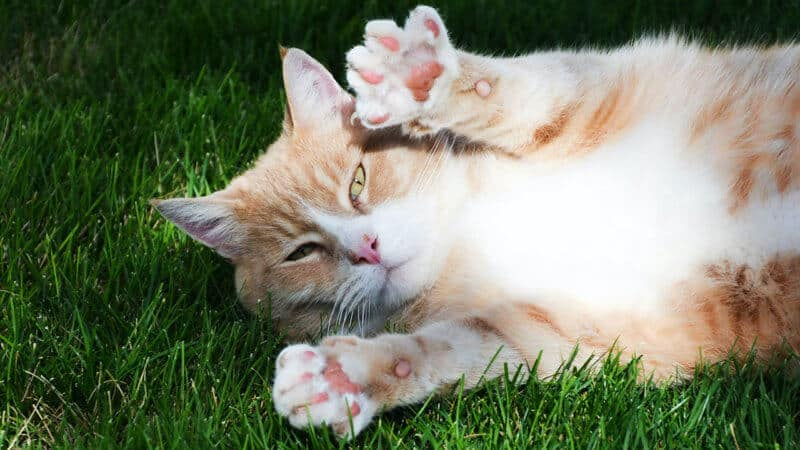
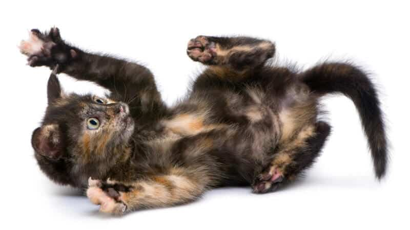
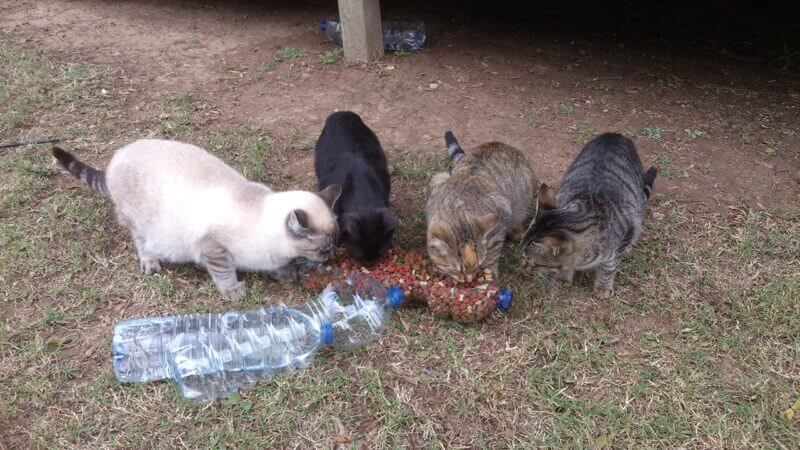

Wiskers WelfareHub
Quiero adoptar
Contactanos
Razas
Alimentacion
Salud
Tienda


Bienvenido a Whiskers WelfareHub, tu recurso informativo sobre todo lo relacionado a los felinos. Lea los últimos artículos hasta la actualidad:

¿Qué son los Gatos Mestizos? Características, Fotos y Vídeos
LEER MAS

Accesorios para Gatos Domésticos
LEER MAS

Cómo cortarle las uñas a un gato para que no arañe
LEER MAS

Almohadillas de los gatos: para qué sirven, enfermedades, heridas y tratamiento
LEER MAS

Los Gatos Carey: leyenda, carácter, comportamiento y fotos
LEER MAS

¿Cómo son los Gatos Callejeros?
LEER MAS
publicidad de tienda para accesorios y juguetes + imagen de gatito con juguete